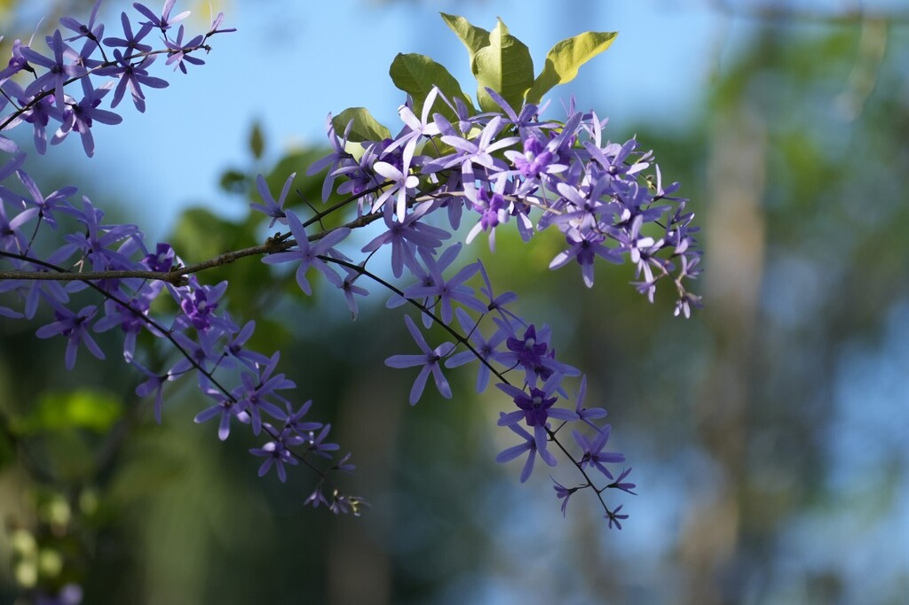

- The rough, sandpaper-textured leaves give it one of its folk names — Sandpaper Vine.
- What looks like a two-toned purple flower is actually two separate structures: the star-shaped calyx persists long after the true purple petals drop, leaving a lavender haze on the vine for weeks.
- Native to Central America and the Caribbean, it was a favorite of Victorian botanical illustrators for the complexity of its bloom.
- One of the most spectacular flowering vines in tropical horticulture.
Native to the West Indies and from Mexico south through Central America to Paraguay, growing in seasonal forests, along watercourses, and on rocky outcrops. Also found in Cuba, Jamaica, Puerto Rico, and Hispaniola.
- The Queen's Wreath has a botanical trick that doubles its display — each flower spike carries two distinct structures. The darker purple true flowers open and drop within a day or two, but the five-pointed star-shaped calyces that surround them are lavender-blue and persist for weeks, slowly fading to silver-gray.
- The result is a vine that appears to be blooming for months when technically the flowers themselves are brief.
- The sandpaper leaf texture is not just a curiosity — in South America the Wayapi people used the rough leaves to polish gourds, calabashes, and soft wood, the same way a craftsman would use coarse sandpaper. Run your hand along a leaf and you'll feel it immediately.
- Lord Robert Petre, whose name the genus carries, died at just 29 years old in 1743 — yet in his brief life he assembled a collection of over 200,000 plants at his estate at Ingatestone Hall in Essex, introduced numerous tropical species to European cultivation, and left a mark on horticultural history that outlasted him by centuries. The Queen's Wreath was among the plants named in his honor.
- It looks very much like a tropical wisteria — the closest visual analog most visitors will recognize — but unlike the invasive wisterias plaguing the American South, this one has no known invasive issues in Florida.
- The genus name honors Robert James Petre, 8th Baron Petre of Ingatestone Hall — an English patron of botany who assembled one of the greatest private plant collections in 18th-century England. The specific epithet volubilis means 'twining' in Latin. One of the common names, Fleur de Dieu, means 'Flower of God.'
The Queen's Wreath's long racemes of tubular flowers attract bees, butterflies, and hummingbirds throughout its extended blooming season. The two-phase flower structure — true petals followed by persistent lavender calyces — extends the display and pollinator activity well beyond the initial bloom.
The dense, woody vine provides substantial cover and nesting structure for small birds, and mature specimens with heavy stems create durable scaffolding for climbing wildlife. While not a documented butterfly larval host, it is a consistent nectar source across multiple pollinator groups in South Florida gardens.
By seed and cuttings. Seeds form inside the persistent calyx; when dry, the calyx detaches and spins like a rotor blade in the wind — one of the more elegant seed dispersal mechanisms in the collection.
Dense racemes reaching over one foot long, each carrying 15 to 30 flowers. The darker purple true corollas last only a day or two before dropping, but the five-pointed star-shaped lavender-blue calyces persist for weeks, slowly fading to silver-gray — producing an exceptionally long effective display. Peak bloom spring through early summer, with a secondary flush in fall.
Large, dark green, oval to elliptic, 4 to 9 inches long — famously rough on both surfaces, with a sandpaper texture unlike any other vine in the park.
Woody, twining, gray bark. Can reach several inches in diameter on mature specimens.
Run your hand along a leaf — the sandpaper texture is impossible to forget and the most reliable field ID feature on this plant. In bloom, the long purple-and-lavender racemes are unmistakable; after peak bloom, watch for the silvery gray persistent calyces that hold the display for weeks longer. The overall impression from a distance is remarkably similar to a wisteria in full flower.
This is an ornamental, not eaten, but it's harmless — no known toxicity to people, dogs, or cats.
NOMENCLATURE: Petrea remains in Verbenaceae, even though many genera once grouped with it (e.g., Clerodendrum, Callicarpa) have since been moved to Lamiaceae. A useful contrast for visitors interested in how molecular data reshaped the old Verbenaceae.


- © Rhonda Olschefskie (CC-BY-NC), via iNaturalist
- © jsea (CC-BY-NC), via iNaturalist